PHIL 210 World Religions · Man’s Inhumanity to Man · Lecture 1
The Holocaust, Genocide, and the Problem of Human Evil
Homo homini lupus
Main gate and railway spur of Auschwitz II-Birkenau, German-occupied Poland (photographed 2016). Dennis G. Jarvis · CC BY-SA 2.0.
Man is a wolf to man.
Are we wolves to one another?
The century of progress.
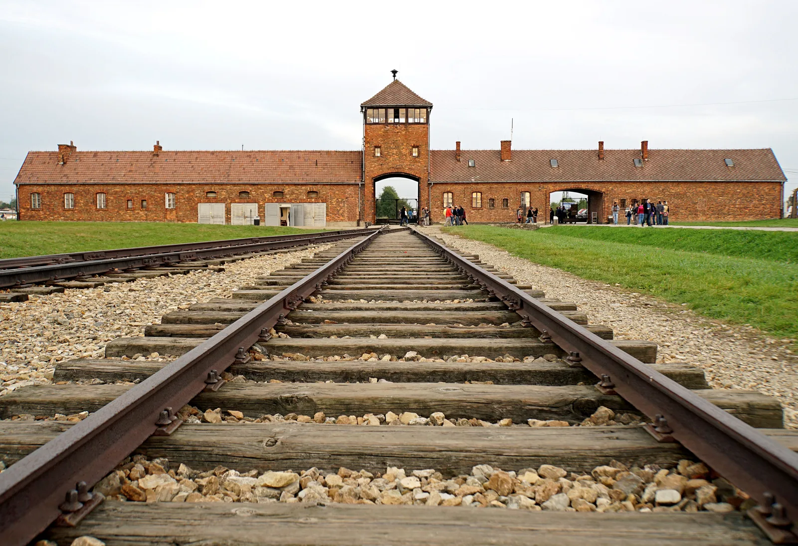
The century of genocide.
Left: Buzz Aldrin's bootprint on the Moon, July 20, 1969. Right: the rail spur into Auschwitz II-Birkenau, German-occupied Poland. NASA / Buzz Aldrin · Public domain. Dennis G. Jarvis · CC BY-SA 2.0.
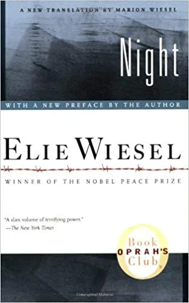
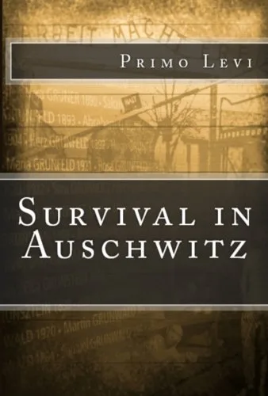
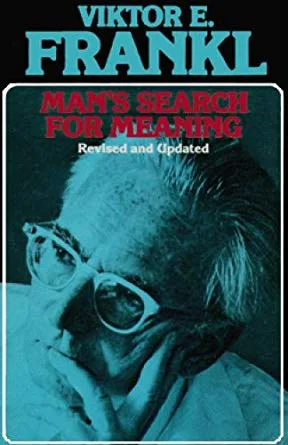
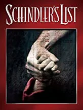
Elie Wiesel, Night · Primo Levi, Survival in Auschwitz · Viktor Frankl, Man's Search for Meaning · Schindler's List (1993). Cover image, used for teaching (fair use).
“Never forget”: what?
The Holocaust
Europe · 1933–1945
6 million Jews murdered
Armenian Genocide
Ottoman Empire · 1915–1923
est. up to 1.2 million killed
Holodomor
Soviet Ukraine · 1932–1933
est. 3.9 million starved
The Gulag
Soviet Union · 1930–1953
est. 18 million imprisoned
Rape of Nanjing
Nanjing, China · 1937–1938
est. 100,000–300,000 killed
Khmer Rouge Killing Fields
Cambodia · 1975–1979
est. nearly 2 million dead
Rwandan Genocide
Rwanda · 1994
est. 500,000–800,000 killed
Srebrenica
Bosnia and Herzegovina · 1995
est. 8,000 men and boys killed
Consequence 1
“One of a kind” → nothing to learn
Consequence 2
Nuremberg for Nazism. Nothing for communism.
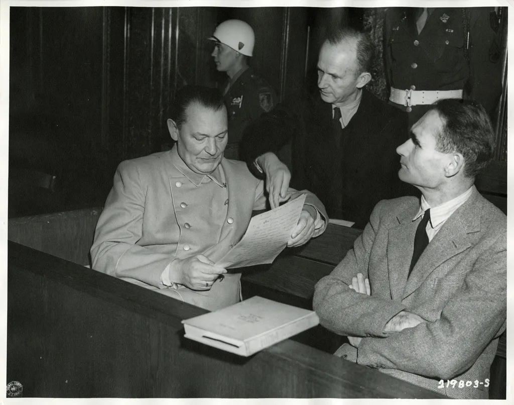
Why is one unthinkable, and the other fashion?
Part One · Words
From words, to laws, to walls, to bullets, to gas.
New Synagogue, Oranienburger Strasse, Berlin, Germany (built 1859–66; restored façade). Pedelecs · CC BY-SA 3.0.
Germany · France · 1781–1843
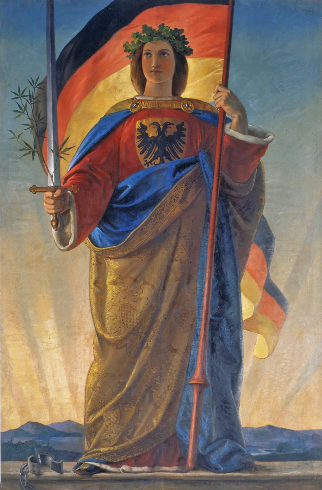
Germania, 1848, attributed to Philipp Veit, painted for the Frankfurt Parliament in St. Paul's Church, Frankfurt, Germany. Attributed to Philipp Veit · Public domain.
Heinrich von Treitschke, Germany, 1879
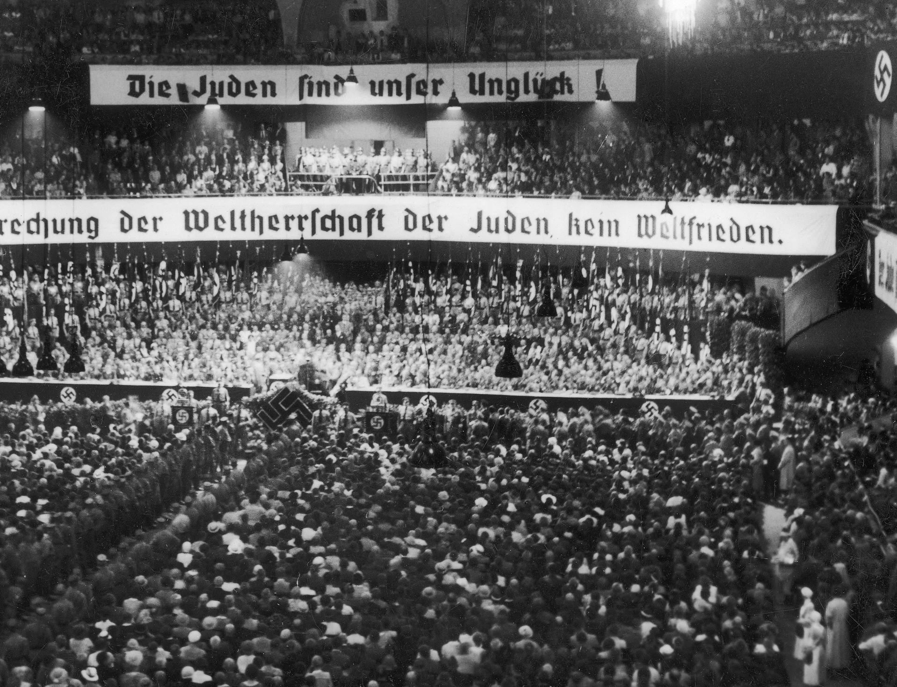
Julius Streicher speaking at the Berlin Sportpalast, Berlin, Germany, August 15, 1935. The balcony banner reads "Die Juden sind unser Unglück!" ("The Jews are our misfortune!"). Robert Sennecke · Narodowe Archiwum Cyfrowe · Public domain.
Russian Empire · 1881
Pogroms. Then laws. Then millions leave.
Pogrom in Kiev, Russian Empire (now Kyiv, Ukraine), 1881: contemporary illustration. The Penny Illustrated Paper, 1881 · Public domain.
Part Two · Laws
Germany, 1933–1939
SA men at the Woolworth store, Berlin, Germany, April 1, 1933. The signs read "Germans! Defend yourselves! Don't buy from Jews!" Bundesarchiv, Bild 102-14468 / Georg Pahl / CC BY-SA 3.0 DE.
Germany
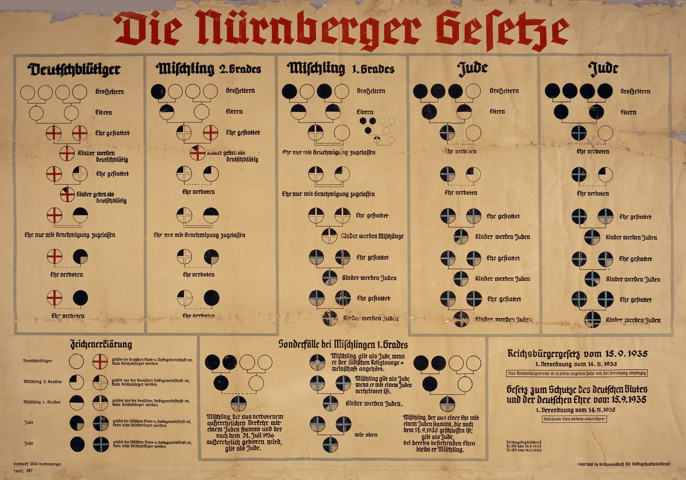
Chart explaining the Nuremberg Laws of September 15, 1935, issued in 1935 to define who counted as a Jew. Reichsausschuss für Volksgesundheitsdienst, 1935 · USHMM Collection · Public domain.
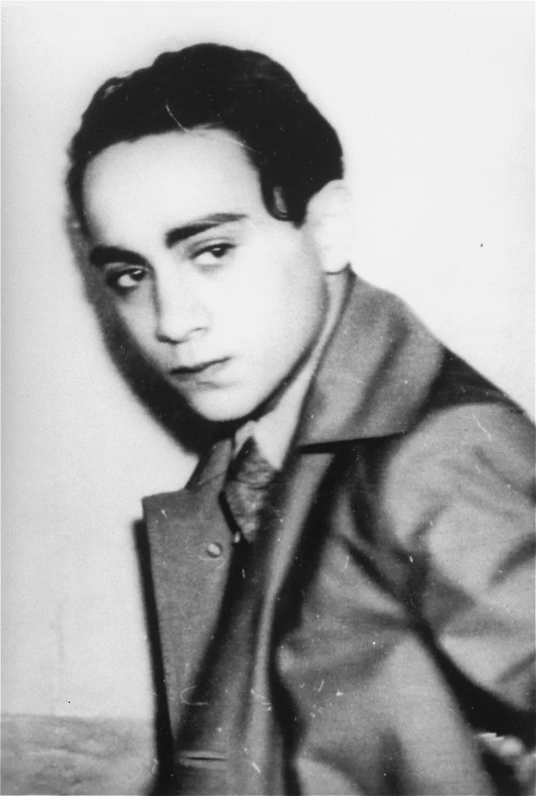
Herschel Grynszpan, 17
Paris, France · November 7, 1938
Herschel Grynszpan, 17, after his arrest, Paris, France, November 1938. Bundesarchiv, Bild 146-1988-078-07 / photographer unknown / CC BY-SA 3.0 DE.
Kristallnacht
Germany · November 9–10, 1938
1,400 synagogues · 26,000 men to camps
The Michelsberg synagogue burning, Wiesbaden, Germany, November 10, 1938. Leo Baeck Institute. Leo Baeck Institute · No known restrictions.
January 30, 1939
“…the annihilation of the Jewish race in Europe.”
Hitler speaking to the Reichstag, Berlin, Germany, January 30, 1939. Photographer unknown · Arquivo Nacional, Brazil · Public domain.
Wannsee, Berlin, Germany · January 20, 1942
15 officials. 11 million Jews.
The villa at Am Grossen Wannsee 56–58, Berlin, Germany, where the Wannsee Conference met on January 20, 1942. Benjamin Snyder · Public domain.
Part Three · Walls
The ghettos of German-occupied Poland, 1939–1943
"Ghetto! Epidemic danger. Entry forbidden." Ghetto boundary sign, German-occupied Poland, c. 1940–41 (location to confirm). Image from the course slide collection; source under review.
Warsaw, Poland
400,000 people · 1.3 square miles · about 1,100 calories a day
The Warsaw ghetto wall at Plac Żelaznej Bramy, Warsaw, Poland, autumn 1940. Photographer unknown · Public domain.
Adam Czerniaków, Warsaw, Poland, May 1941 · Jewish councils
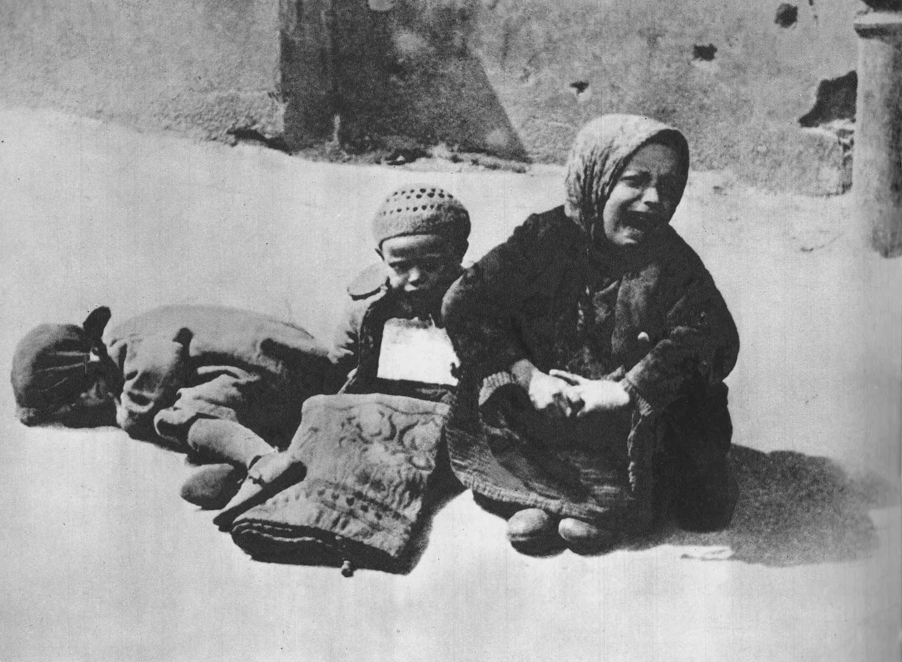
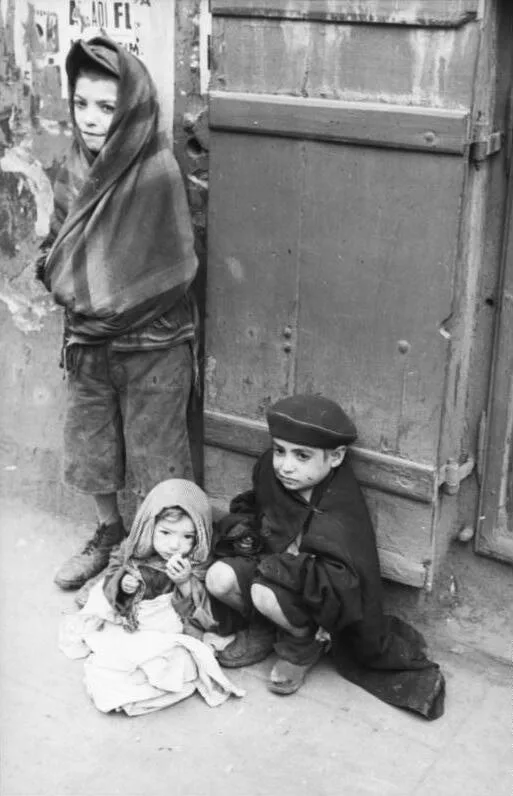
In each ghetto the Germans appointed a Jewish council, a Judenrat (plural Judenräte), usually made up of respected community leaders. The councils had to carry out German orders: register residents, collect money and valuables, supply workers for forced labor, and keep order with a Jewish police force. They also tried to keep people alive, running soup kitchens, hospitals, orphanages, and schools. When the deportations began, the Germans demanded that councils produce lists and quotas of people to be sent away. Council leaders faced impossible choices. Some, like Adam Czerniaków in Warsaw, Poland, refused and took their own lives. Others, like Chaim Rumkowski in Łódź, Poland, complied in the hope that giving up some would save the rest. Few council members survived; the Germans murdered most of them along with the people they led. Historians today judge them with great caution, because no one chose the situation they were in.
Left: homeless children in the Warsaw ghetto, Poland, 1941. Right: children in the Warsaw ghetto, June 1941, photographed by a German propaganda company. Photographer unknown · Public domain. Bundesarchiv, Bild 101I-134-0778-38 / Albert Cusian / CC BY-SA 3.0 DE.
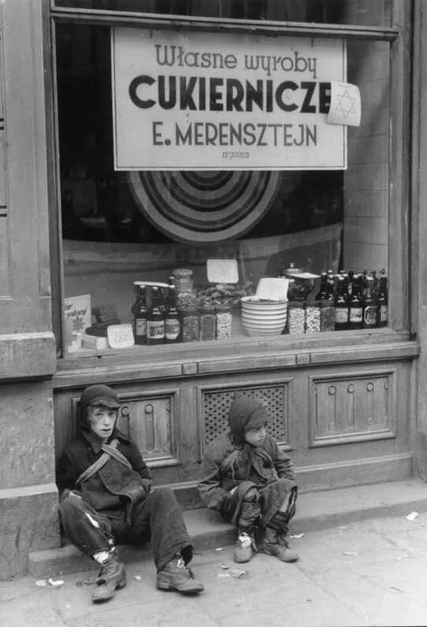
Warsaw ghetto, Poland · 1941
83,000
dead of hunger and disease
Children in front of the Jedydia Merensztejn bakery, Nowolipki 7, Warsaw ghetto, Poland, May 1941. Photographed by a German propaganda company. Bundesarchiv, Bild 101I-134-0782-13 / Ludwig Knobloch / CC BY-SA 3.0 DE.
Children on Mariańska Street, Warsaw ghetto, Poland, 1941. Photographer unknown · Public domain.
Over the wall
Jewish children climbing the ghetto wall, Warsaw ghetto, Poland, 1941. Photographer unknown · Public domain.
Behind the wire
Barbed wire down the middle of Krochmalna Street marking the changed border of the Warsaw ghetto, Poland, 1941. Photographer unknown · Public domain.
Warsaw, Poland · from July 22, 1942
265,000
Jews deported to Treblinka
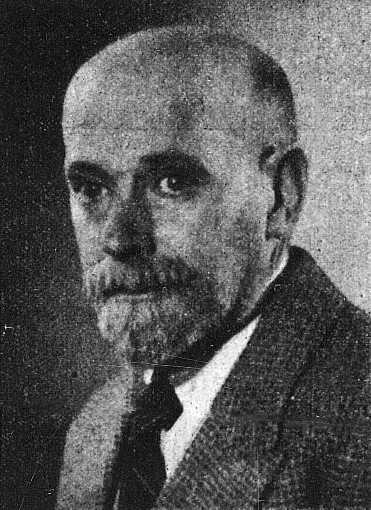
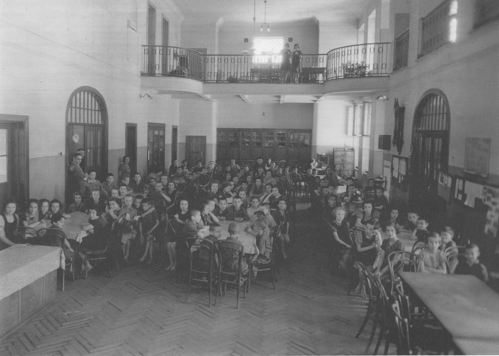
Janusz Korczak · August 1942
He would not leave the children.
Janusz Korczak (Henryk Goldszmit, 1878/79–1942), doctor, children's author, and director of the Jewish orphanage, Warsaw, 1933. Children in the Dom Sierot orphanage, Warsaw, Poland. Nasz Przegląd Ilustrowany, 1933 · Public domain. Foto Forbert · Public domain.
Łódź, Poland · September 1942
“Give me your children.”
Children of the Marysin colony rounded up in the Gehsperre action, Łódź ghetto, Poland, September 1942, on their way to deportation to Chełmno. Photographer unknown · USHMM · Public domain.
Part Four · Bullets
The German-occupied Soviet Union and Poland, 1941–1943
Content note: the next slides are about mass shootings and include photographs of killings.
The ravine at Babyn Yar, Kyiv, Ukraine, strewn with the belongings of the murdered, October 1, 1941. Photographed by German army photographer Johannes Hähle. Johannes Hähle · Public domain.
Einsatzgruppen
Mobile killing squads
June 22, 1941 · the Soviet Union
Helped by police battalions, the Waffen-SS, the army, and local auxiliaries
Who did the shooting?
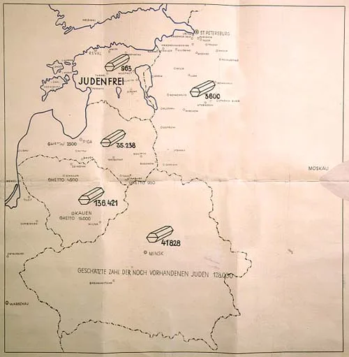
The Einsatzgruppen ("operational groups") were four mobile units, labeled A, B, C, and D, drawn from the SS Security Police and the SD, the SS intelligence service. Together they had about 3,000 men. They followed the German army into the Soviet Union in June 1941, with orders to kill Jews, communist officials, Roma, and others the Nazis called enemies. They were far too few to kill on the scale that followed alone. Battalions of the German Order Police, ordinary uniformed policemen, carried out many of the shootings. Units of the Waffen-SS and the regular German army took part or helped by rounding up victims, guarding sites, and supplying trucks and ammunition. Local auxiliary police and militias in occupied Lithuania, Latvia, Estonia, Belarus, and Ukraine joined in, and Germany's ally Romania carried out mass shootings of its own. The killing needed many hands.
Einsatzgruppe A's own map, attached to Stahlecker's report to Heydrich, January 1942: each coffin counts Jews shot in that region. Einsatzgruppe A (Stahlecker report), 1942 · USHMM · Public domain.
Babyn Yar, Kyiv, Ukraine · October 1941
What they left behind
Clothing and belongings left at Babyn Yar, Kyiv, Ukraine, October 1941. Photographed by Johannes Hähle. Johannes Hähle · Public domain.
Babyn Yar, Kyiv, Ukraine · September 29–30, 1941
33,771
Jews shot in two days
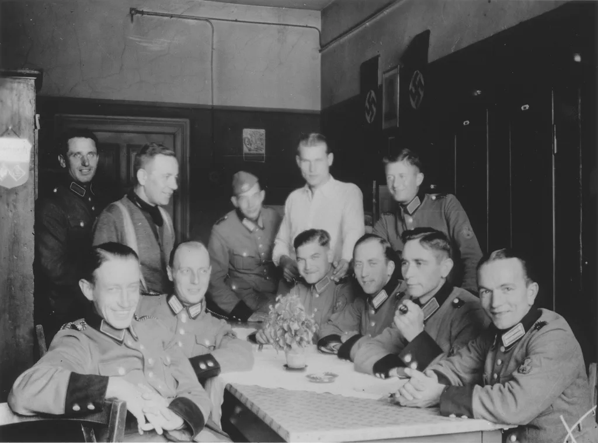
Reserve Police Battalion 101
Józefów, Poland · July 13, 1942
Police Battalion 101 in its barracks, Łódź, Poland, 1941. USHMM, courtesy of Michael O’Hara · © USHMM, used with permission.
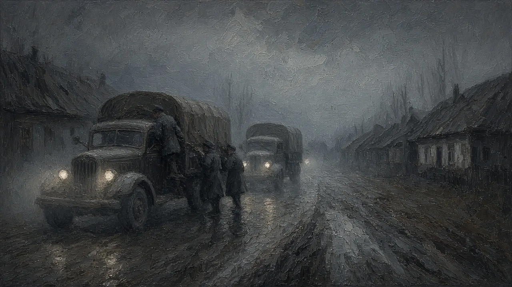
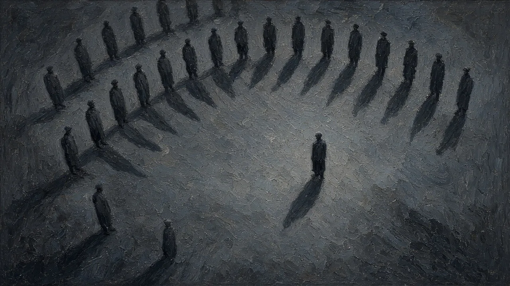
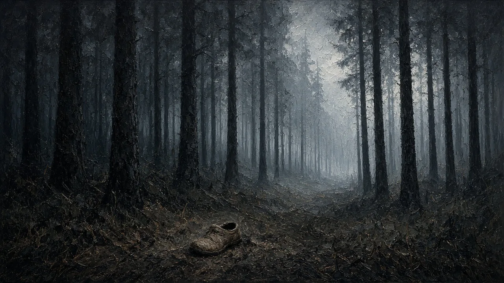
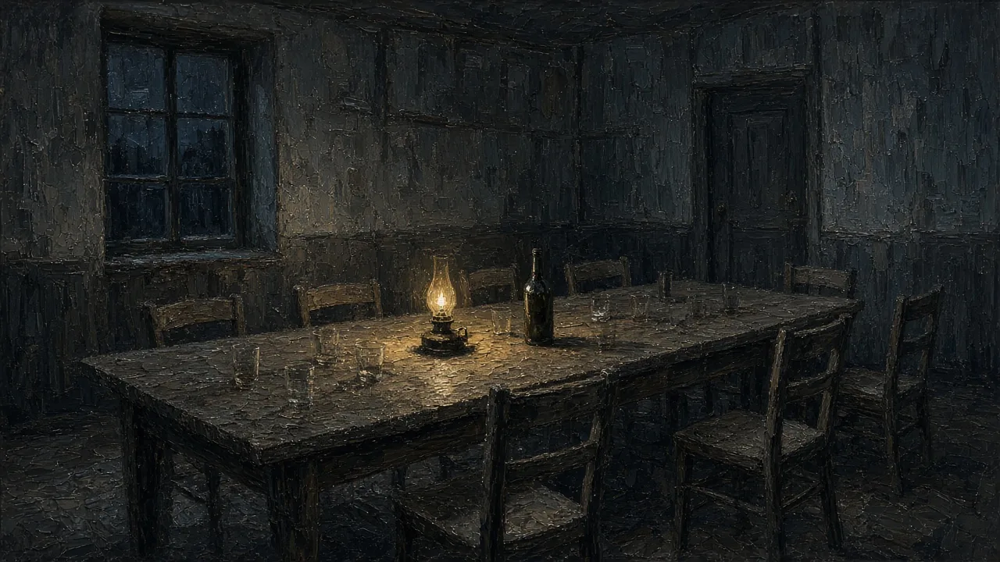
German-occupied Soviet Union · 1941–1944
up to
2,000,000
Jews shot · nearly 1 in 3 of all Holocaust victims
Part Five · Gas
German-occupied Poland, 1941–1945
Rail spur into Auschwitz II-Birkenau, Poland. Dennis G. Jarvis · CC BY-SA 2.0.
First built for Germans with disabilities
T4 · 70,000+ gassed, 1940–41 · T4 and Nazi eugenics
Eugenics was a movement, popular in the early 1900s in many countries, including the United States, that claimed a nation could "improve" itself by controlling who was allowed to have children. The Nazis turned it into "racial hygiene," the belief that the German people had to be cleansed of anyone judged hereditarily "unfit." A 1933 law ordered the forced sterilization of people with conditions such as schizophrenia, epilepsy, or deafness; about 400,000 were sterilized. In 1939 the regime moved to murder. Its secret program for killing disabled people in hospitals and institutions was code-named T4, after the address of its Berlin office, Tiergartenstrasse 4. The Nazis called it "euthanasia," a "mercy death," and spoke of "life unworthy of life." Between January 1940 and August 1941, about 70,000 people were killed in gas chambers at six centers in Germany and Austria. After protests the gassing stopped, but killing went on by drugs and starvation; in all, about 250,000 or more died. T4's gas-chamber methods and many of its staff then went to the killing centers in occupied Poland.
Hartheim Castle, near Linz, Austria, one of the six T4 gassing centers (1940–44). Isiwal · CC BY-SA 4.0.
German-occupied Poland
Fewer than 200 survived Bełżec, Sobibór, and Treblinka.
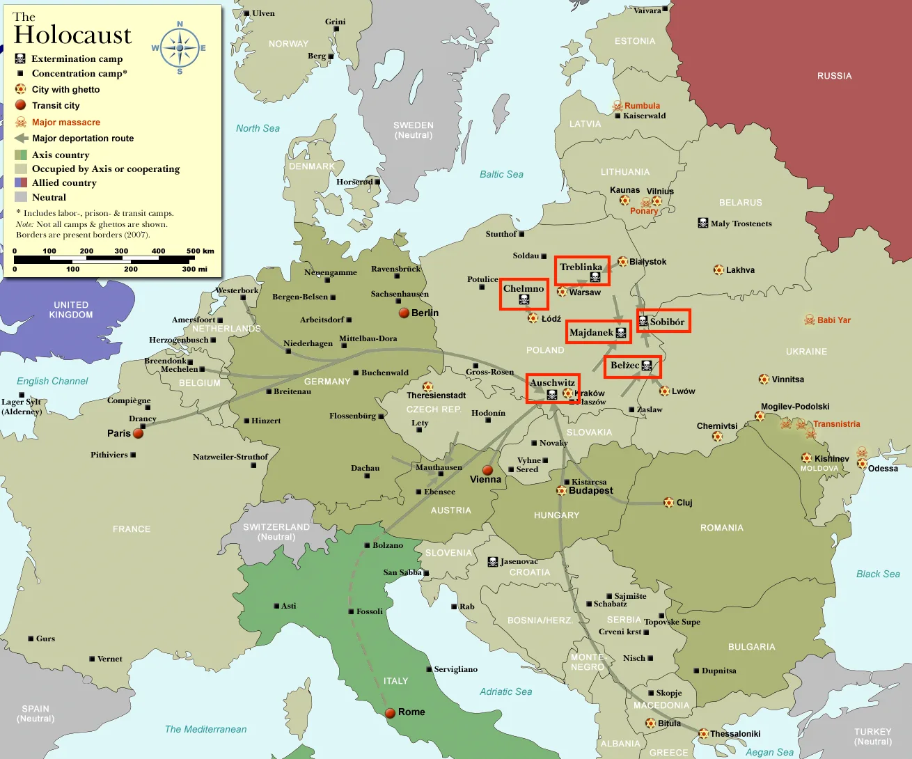
The killing centers in German-occupied Poland, shown within modern borders. Dna-Dennis and SarahSV (Wikimedia Commons) · CC BY 3.0.
Selection
Auschwitz-Birkenau · May 1944
Selection of Jews from Hungary on the ramp at Auschwitz-Birkenau, May 1944. From the Auschwitz Album, photographed by the SS. Yad Vashem. SS photographer (Auschwitz Album) · Yad Vashem · Public domain.
Hungary · May–July 1944
about
437,000
Jews deported in under two months, most to Auschwitz
Auschwitz, German-occupied Poland
200,000
Jews registered as prisoners · about half died
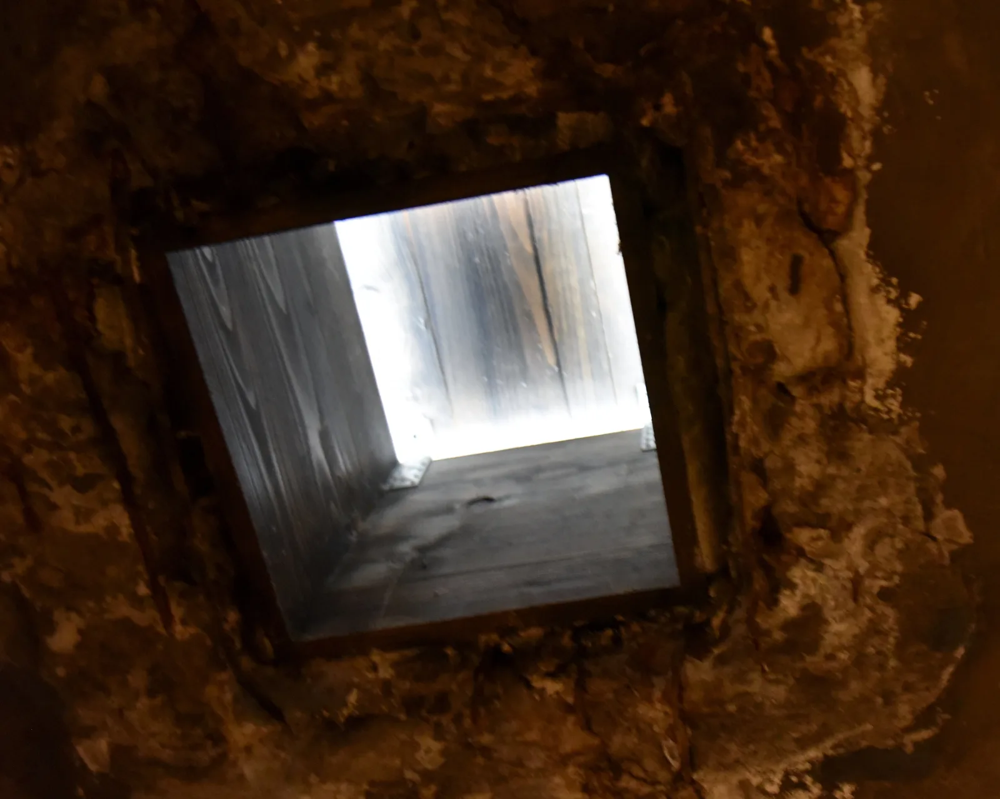
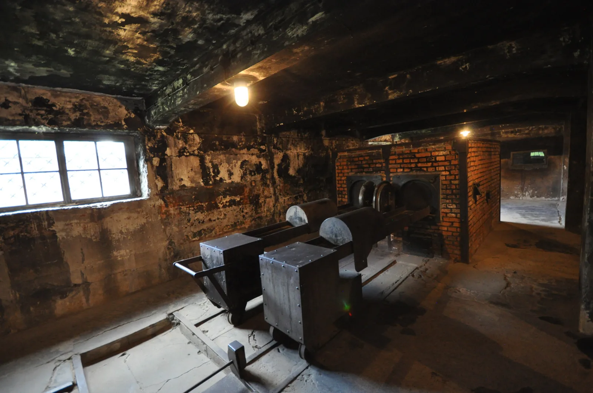
Why parts of Auschwitz I were rebuilt
The gas chamber and crematorium in the Auschwitz main camp (Auschwitz I) were used to murder people with poison gas in 1941 and 1942. (The very first gassing at Auschwitz, in September 1941, took place in the cellar of a prison block nearby.) When larger gas chambers opened at Birkenau, two miles away, the SS stopped using this one, and in 1944 they turned the building into an air-raid shelter, adding walls and blocking the roof openings through which the poison was poured. After the war, the Auschwitz-Birkenau State Museum partly reconstructed the room, reopening roof holes and rebuilding two of the ovens from original parts. The museum says this openly. Holocaust deniers point to the reconstruction to claim that the gas chambers were a hoax. They were not. The evidence for mass gassing at Auschwitz comes from German documents, the ruins of the Birkenau gas chambers the SS blew up in 1945, physical evidence, and the testimony of survivors, of Polish witnesses, and of the SS men themselves, including the camp commandant.
The gas chamber of Crematorium I, Auschwitz I: the roof opening, partly reconstructed after the war. Ovens in Crematorium I, Auschwitz I, reassembled by the museum from original parts. Bahnfrend · CC BY-SA 4.0. Jorge Láscar from Australia · CC BY 2.0.
Auschwitz · January 27, 1945
7,000
prisoners still alive at liberation
Europe · 1933–1945
6,000,000
Jews murdered
Night and Fog
Nuit et brouillard · France, 1955 · 32 minutes
Directed by Alain Resnais · Words by Jean Cayrol, survivor of Mauthausen · Music by Hanns Eisler
Majdanek, on the edge of Lublin, Poland, one of the two camps Resnais filmed in colour in 1955 (photographed 2007). Roland Geider · Public domain.
Content note: the film shows real footage of the dead. Look away if you need to; you can still listen.
Listen for its question near the end:
“Are their faces really different from our own?”
Watch for what it leaves out: Jews are barely named.
▶ Now showing · from DVD · 32 minutes
The Pithiviers internment camp, Loiret, France, 1941: photograph from a French government inspection report. Archives nationales (France) · CC0.
Pierian Spring
Today’s lecture ends here. Continue on your own: the seven stories below finish this chapter’s history. Five end with a review question to answer; stories 5 and 6, on the Warsaw ghetto, deepen story 4 and share its question.
“A little learning is a dang’rous thing; / Drink deep, or taste not the Pierian spring.” Alexander Pope
The Pierian Spring.
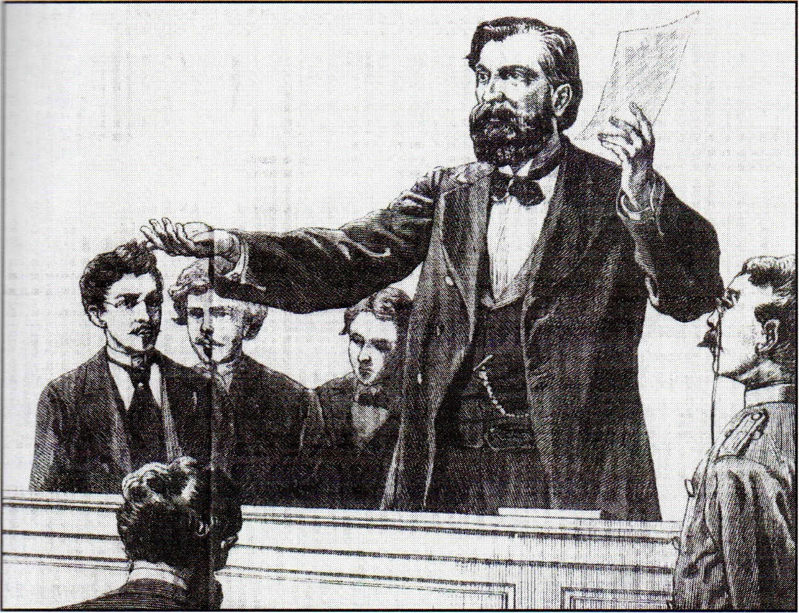
Pierian Spring · 1 of 7
Read the story
Review question 1
How did nationalism and racial thinking change the old religious hostility toward Jews into the modern "Jewish Question," and why did that change make a Jew's conversion to Christianity no protection?
In class you heard that the "Jewish Question" began hopefully. Here's how it turned. When Christian Wilhelm von Dohm wrote in 1781 that Jews could become useful citizens, he assumed Jews needed "improving." Emancipation came with strings: give up your separateness and we'll accept you. Many Jews did enter German universities, professions, and culture with enormous energy. When Germany was unified in 1871, Jews had full legal equality.
That success itself became the new complaint. Wilhelm Marr's 1879 pamphlet claimed Jews had already "conquered" Germany. Treitschke, a respected professor, gave the prejudice academic respectability with "The Jews are our misfortune." The Antisemites' Petition of 1880–81 asked Bismarck to roll emancipation back, by limiting Jewish immigration, keeping Jews out of positions of authority, and restricting Jewish teachers. Bismarck didn't act on it, but around 265,000 men had signed. In Russia, after the pogroms of 1881, the "May Laws" of 1882 restricted where Jews could live, and quotas soon limited Jewish students in schools. By then hostility no longer depended on what Jews believed. It depended on their "blood." That shift from religion to race made conversion useless as an escape and made "solutions" more and more extreme.
Review question 1: How did nationalism and racial thinking change the old religious hostility toward Jews into the modern "Jewish Question," and why did that change make a Jew's conversion to Christianity no protection?
Heinrich von Treitschke lecturing, c. 1879. Photographer unknown · Public domain.
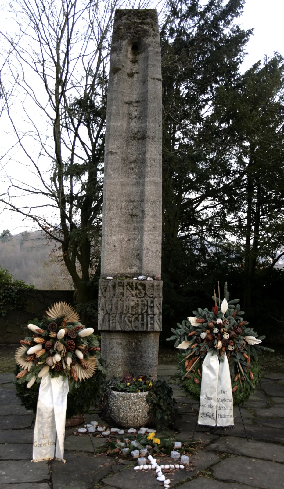
Pierian Spring · 2 of 7
Helene Melanie Lebel, Vienna, Austria (1911–1940)
Read the story
Review question 2
In what ways was the Nazi "euthanasia" program a rehearsal for the murder of Europe's Jews, in its ideas, its methods, and its personnel?
Helene Melanie Lebel was a young woman from Vienna, Austria, raised Catholic, who loved swimming and opera and was studying law. In her early twenties she developed schizophrenia and was placed in a psychiatric hospital. In August 1940 her mother was told she had been transferred to another hospital. In fact she was taken to the T4 killing center at Brandenburg, near Berlin, Germany, undressed, examined, and led into a "shower room." Her death certificate gave a false cause of death. She was one of 9,772 people gassed at Brandenburg that year.
Programs like T4 rested on an idea the Nazis called "life unworthy of life." Doctors, nurses, and administrators, many of them highly respected, carried it out. Bishop von Galen's sermon of August 3, 1941 shows that public protest was possible. Historians still debate how much the protests mattered, but weeks later Hitler halted the central gassing. But the killing went on in quieter forms, and the men who ran the T4 gas chambers became staff at Bełżec, Sobibór, and Treblinka in German-occupied Poland.
Review question 2: In what ways was the Nazi "euthanasia" program a rehearsal for the murder of Europe's Jews, in its ideas, its methods, and its personnel?
Memorial at the Hadamar T4 killing center, Hesse, Germany. Volker Thies · CC BY-SA 3.0.
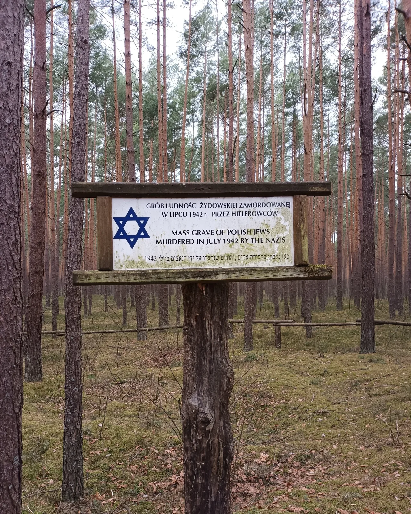
Pierian Spring · 3 of 7
Read the story
Review question 3
What does the story of Reserve Police Battalion 101 suggest about how "ordinary" people come to take part in mass murder, and why does it matter that they were offered a way out?
Reserve Police Battalion 101 was not an elite Nazi unit. Its men were mostly working- and lower-middle-class men from Hamburg, Germany, with an average age of thirty-nine, and few were committed Nazis. Browning reconstructed their story from the interrogations of 210 former members, questioned by West German prosecutors in the 1960s. After Józefów, the battalion took part in shootings across the Lublin district of German-occupied Poland and in the deportation of ghettos to Treblinka. By November 1943 it had shot at least 38,000 Jews and deported at least 45,000 more, a total of at least 83,000 people murdered by a unit of fewer than five hundred men. Most of the men found that the killings after Józefów got easier.
Why did they do it? Browning found no single answer: conformity and not wanting to leave the "dirty work" to comrades, deference to authority, careerism, wartime brutalization, and years of propaganda all played a part. Asked decades later why they had not stepped out, some said they had not wanted to look like cowards. One answered simply: "I was cowardly." The men themselves said little about hatred. That is exactly what makes the story frightening.
Review question 3: What does the story of Reserve Police Battalion 101 suggest about how "ordinary" people come to take part in mass murder, and why does it matter that they were offered a way out?
Information board at the mass graves in the forest near Józefów, Poland. Paweł Byra · CC BY-SA 4.0.
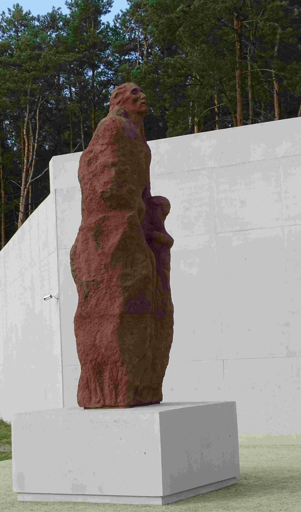
Pierian Spring · 4 of 7
Read the story
Review question 4
Name three different forms of Jewish resistance during the Holocaust, and explain why historians count documenting the crimes as resistance alongside armed revolt.
Resistance in the Holocaust took many forms. Keeping a school running in a ghetto, praying in secret, smuggling bread, and keeping a diary were all forms of resistance. So was Emanuel Ringelblum's Oyneg Shabes archive. Its members buried ten metal boxes in August 1942 and two milk cans in February 1943. The boxes were found in 1946 and the milk cans in 1950. A third cache has never been found. Ringelblum himself was discovered in hiding in 1944 and murdered.
There was armed resistance too, though the odds were hopeless. Besides the Warsaw ghetto uprising of April–May 1943, prisoners revolted at Treblinka on August 2, 1943, and at Sobibór on October 14, 1943, where dozens escaped and survived. At Auschwitz-Birkenau in October 1944, the Sonderkommando, the Jewish prisoners forced to work in the crematoria, rose up and set fire to one of them. Others escaped to tell the world: two Jews from Slovakia, Rudolf Vrba and Alfréd Wetzler, escaped Auschwitz in April 1944 and wrote a detailed report on the gas chambers.
Review question 4: Name three different forms of Jewish resistance during the Holocaust, and explain why historians count documenting the crimes as resistance alongside armed revolt.
Mother and child, memorial by Mieczysław Welter, Sobibór, Poland. Hajog · CC BY-SA 4.0.
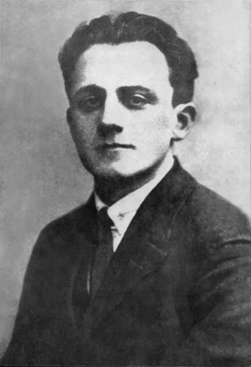
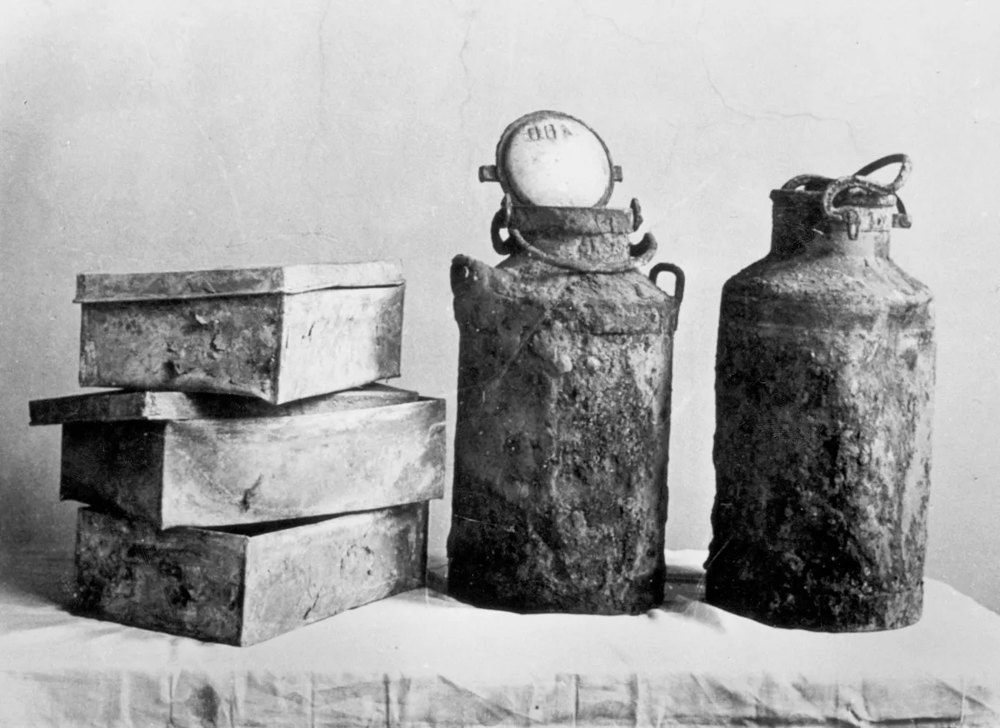
Pierian Spring · 5 of 7
Emanuel Ringelblum and Oyneg Shabes, the secret archive of the Warsaw ghetto (1940–1943)
Read the story
No new review question: this story goes with Review question 4 (story 4).
When Germany occupied Warsaw in 1939, the historian Emanuel Ringelblum began keeping a private chronicle of what he saw. After the Germans sealed the ghetto in November 1940, his chronicle grew into a secret organization with several dozen contributors. They called it Oyneg Shabes, Yiddish for “Joy of the Sabbath,” because they held their clandestine meetings on Saturdays. Ringelblum worked through the ghetto’s self-help network of soup kitchens, refugee shelters, house committees, and underground schools, collecting testimonies from the people who came there for help.
They saved almost anything that could show how Jews lived and died: diaries, testimonies, poems, songs, underground newspapers, ration cards, tram tickets, candy wrappers, theater posters, and hundreds of postcards from Jews in small towns about to be deported to an “unknown destination.” They also gathered evidence, town by town, of what the Germans did, when, and who helped them, so that there could be justice after the war. Even during the Great Deportation of summer 1942, when several of their own members were sent to Treblinka, the work went on.
Story 4 told you where the archive was buried. Here are the people who buried it. On August 3, 1942, a teacher, Israel Lichtensztajn, and two of his former students, Dawid Graber and Nachum Grzywacz, hid the first part in ten metal boxes in the cellar of their old school at 68 Nowolipki Street, adding their own last testaments. Grzywacz was deported and killed soon afterward. In February 1943, Ringelblum and Lichtensztajn buried the second part in two milk cans beneath the same building. In March 1943, Ringelblum escaped with his family into hiding on the “Aryan” side of Warsaw. He went back into the ghetto during the uprising, was deported to the Trawniki labor camp, and escaped with the help of a Polish man and a Jewish woman. In March 1944 the family’s hideout was discovered, and they and the Jews hiding with them were taken to the ruins of the ghetto and murdered.
After the war, two surviving members, Rachela Auerbach and Hersz Wasser, led searchers to the first burial site; the ten boxes came out of the rubble on September 18, 1946. The milk cans were found by construction workers on December 1, 1950. Today the archive is kept at the Jewish Historical Institute in Warsaw, which bears Ringelblum’s name. Much of what we know about daily life in the Warsaw ghetto, we know because of it, and in the ghetto’s own voices. As you read, ask yourself why people who expected to die spent their last strength saving paper, and what it means that we can hear the ghetto through its own words rather than only through the records of the men who destroyed it.
Review question 4 (shared with story 4): Name three different forms of Jewish resistance during the Holocaust, and explain why historians count documenting the crimes as resistance alongside armed revolt.
Emanuel Ringelblum (1900–1944), historian of the Warsaw ghetto. Metal boxes and milk cans in which the Oyneg Shabes archive was buried, Warsaw ghetto, 1942–43. Jewish Historical Institute, Warsaw. Photographer unknown · Public domain. Jewish Historical Institute, Warsaw · Public domain.
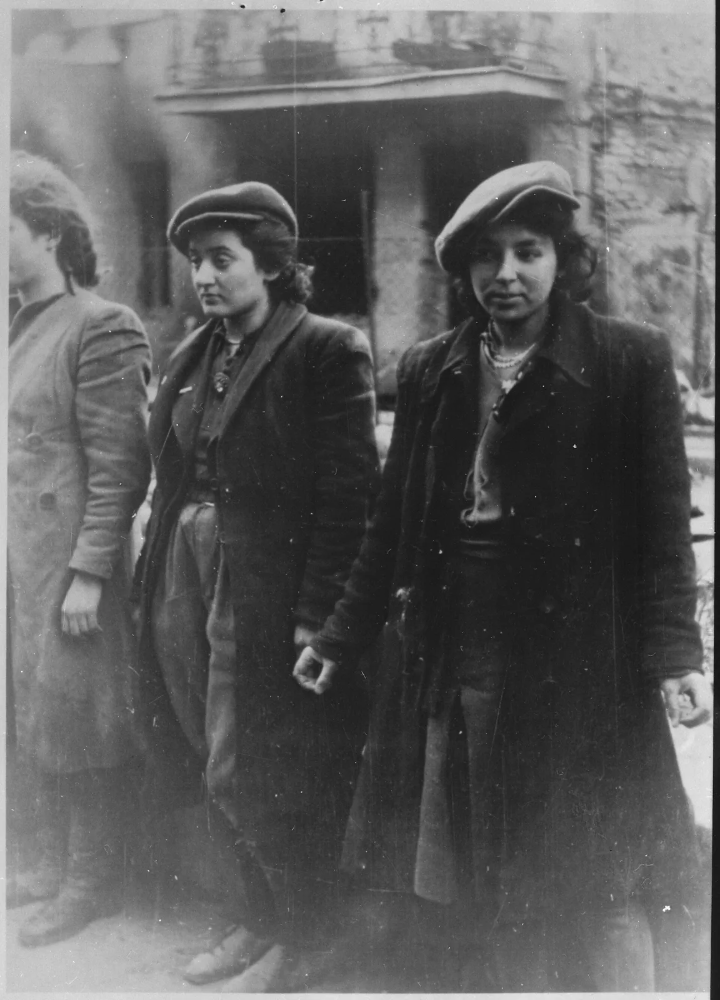
Pierian Spring · 6 of 7
About 700 fighters held out for almost four weeks, April 19 – May 16, 1943
Read the story
No new review question: this story goes with Review question 4 (story 4).
Story 4 mentioned the Warsaw ghetto uprising in a single line. Here is the fuller story. By early 1943, after the Great Deportation of summer 1942, only about 70,000 to 80,000 Jews remained in the Warsaw ghetto, and most now understood that “resettlement” meant death. Underground groups had already joined to form the Jewish Combat Organization (ŻOB); a second force, the Jewish Military Union (ŻZW), grew out of the Revisionist Zionist youth movement Betar. In January 1943, when the Germans returned to resume deportations, a small group of fighters with pistols slipped into a column of Jews being marched to the Umschlagplatz and attacked the guards. Most of them were killed, but the Germans halted the action after seizing 5,000 to 6,500 people. Encouraged, people in the ghetto began digging bunkers.
On April 19, 1943, the eve of Passover, German forces entered to deport the rest. SS General Jürgen Stroop commanded about 2,000 soldiers and police, with artillery and tanks. Against them stood about 700 young Jewish fighters, about 500 in the ŻOB and 250 in the ŻZW, led in the ŻOB by Mordecai Anielewicz, who was twenty-four. They had pistols, grenades (many homemade), and a few rifles and automatic weapons, and on the first day they drove the Germans back out of the ghetto. Thousands of civilians resisted in their own way, refusing to report and hiding underground. The Germans answered by burning and demolishing the ghetto block by block. On May 8 they captured the ŻOB headquarters at 18 Miła Street; Anielewicz and many of his commanders are thought to have taken their own lives rather than be captured. On May 16, Stroop blew up the Great Synagogue on Tłomackie Street and reported to Berlin that the former Jewish quarter of Warsaw was no more.
At least 7,000 Jews died fighting or in hiding. About 7,000 more were sent to Treblinka and murdered, and about 42,000 were deported to labor camps and Majdanek, where most were shot in November 1943. The uprising was still the largest Jewish revolt of the war and the first urban uprising against German occupation in Europe, and it inspired revolts in other ghettos, such as Białystok. The photograph on this slide comes from Stroop’s own illustrated report on the destruction of the ghetto; it shows young women of the Hehalutz Zionist movement captured with weapons. Look at their faces, and ask yourself what it takes to fight when you know you will almost certainly lose, and why the fighters chose to fight anyway.
Review question 4 (shared with story 4): Name three different forms of Jewish resistance during the Holocaust, and explain why historians count documenting the crimes as resistance alongside armed revolt.
Hehalutz women captured with weapons, Warsaw ghetto uprising, Poland, April–May 1943. From the Stroop Report. Photographed by the SS. SS photographer (Stroop Report) · NARA · Public domain.
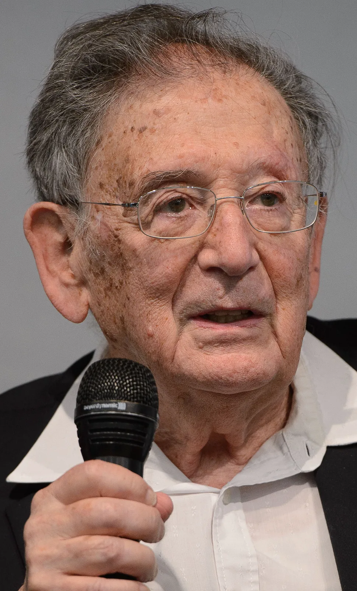
Pierian Spring · 7 of 7
Read the story
Review question 5
What is the difference between calling the Holocaust "unique" and calling it "unprecedented," and which word fits the argument of this unit better? Explain.
In class I argued that teaching the Holocaust as sui generis, one of a kind, lets us treat it as a freak of history with nothing to teach us about human nature. Historians have argued about this for decades. Some insist the Holocaust was unique, in a way that sets it apart from all other mass killing. The Israeli historian Yehuda Bauer suggested a different word: unprecedented. In his view, it was the first time a modern state set out to murder every member of a people, everywhere in the world it could reach, for ideological reasons alone, and treated that murder as a goal in itself. But "unprecedented" means it has a precedent now. It can be compared, and it can happen again.
That is very close to the argument of this unit. The Holocaust had features no other atrocity shared, and it also belongs to a larger human story. Both are true.
Review question 5: What is the difference between calling the Holocaust "unique" and calling it "unprecedented," and which word fits the argument of this unit better? Explain.
Historian Yehuda Bauer (1926–2024). Heinrich-Böll-Stiftung · CC BY-SA 2.0.
Image credits (64 images) USHMM Yad Vashem
Photographs are from Wikimedia Commons (public domain, CC0, or Creative Commons licenses as listed) unless noted. B and BP are AI-generated illustrations.
Background: Hall of Names, Yad Vashem, Jerusalem. David Shankbone · CC BY-SA 3.0.
→ / Space: Next slide
← : Previous slide
Tab / Shift+Tab: Move between pop-up terms and links
Enter / Space on a dotted term: Open its pop-up
S: Speaker notes
F: Fullscreen
O: Overview
ESC: Close an open pop-up (otherwise toggles the overview)